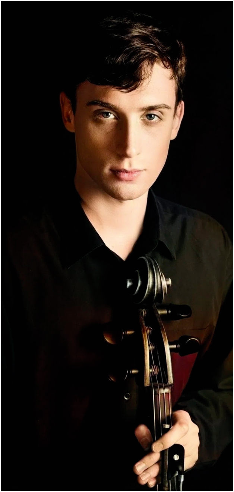
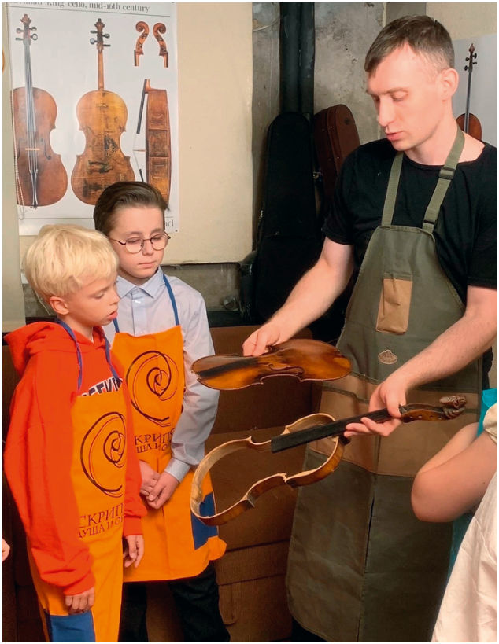
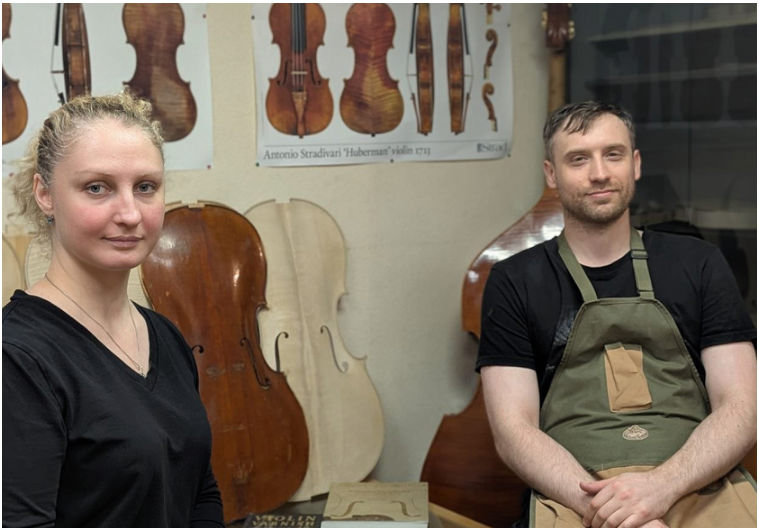

CELLO Мастер · с. 33–36
Советы мастера: Александр Щетина
Виолончелист и скрипичный мастер о выборе инструмента, струнах, канифоли и уходе за виолончелью

Эту рубрику мы посвящаем встречам с мастерами. И в данном выпуске нашим собеседником стал Александр Щетина.
Виолончелист и скрипичный мастер, окончил ГМПИ имени М.М. Ипполитова- Иванова в 2010 году. Лауреат международных конкурсов, стипендиат фонда «Русское исполнительское искусство». В 2015 году он начал осваивать профессию скрипичного мастера, а в 2019-м успешно завершил курс обучения по изготовлению струнно-смычковых инструментов скрипичного и гамбового семейств у К. Хилла. С 2023 года ведёт активную культурнопросветительскую деятельность, является членом «Ассоциации скрипичных мастеров России», а также членом «Творческого союза мастеров-художников и реставраторов музыкальных инструментов».
CELLO Журнал: В начале учебного года очень актуален вопрос подбора инструментов для подросших учеников школ и студентов. Дайте, пожалуйста, советы юным виолончелистам и их родителям по поиску и покупке инструмента. На что стоит обратить внимание?
Александр Щетина: Вы знаете, это очень важный вопрос, и я бы даже сказал, что он актуален не только в начале и конце года, а он актуален всегда, и к тому же это очень сложный вопрос, в особенности для родителей, которые сами не являются музыкантами и не погружены в эту тематику.
Первое, на что я хотел бы обратить внимание: в этом вопросе не получится разобраться, самостоятельно прочитав несколько статей в интернете. Здесь требуется комплексный подход и углублённые профессиональные знания в сфере инструментального исполнительства и в области изготовления струнно-смычковых музыкальных инструментов. Поэтому моя первая рекомендация будет следующей: прежде чем приобретать инструмент, предварительно посоветуйтесь с Вашим преподавателем на предмет того, подходит ли он по размеру, мензуре и звучанию и соответствует ли тем целям и задачам, которые стоят перед учеником. Если педагог говорит, что это подходящий инструмент, можно перейти к следующему этапу, а именно к консультации у скрипичного мастера. Данная консультация сродни проверке автомобиля перед покупкой. Нам нужно узнать всё о техническом состоянии инструмента, о его фактическом происхождении (принадлежности к той или иной стране, школе или конкретной мастерской, в которой был изготовлен инструмент) и верифицировать его реальную стоимость. Таким образом, после консультации скрипичного мастера (или даже нескольких мастеров) Вы сможете составить полноценное суждение о данном инструменте и будете чётко понимать, соответствует ли он заявленным качествам, имеются ли у него скрытые проблемы и соответствует ли объявленная на него цена средней рыночной.
Должен сказать, что перед тем как начинать поиск инструмента, я бы порекомендовал не только определиться с целями и задачами, для которых он приобретается, но и с примерным бюджетом, который вы можете потратить. Это сразу же сузит ваш поиск и сэкономит много времени.
Ещё хотелось бы отметить немаловажный аспект, который зачастую ускользает при размышлениях о покупке инструмента, а именно – наличие или отсутствие достойного смычка. А вопрос это крайне важный, так как «смычок – это половина звучания инструмента», и чем более дорогой и высококлассный инструмент мы покупаем, тем большую роль в его звучании будет играть смычок. Так что уровень смычка должен соответствовать уровню инструмента или превышать его, потому что примитивный смычок будет сильно портить звук и управляемость даже очень хорошего инструмента. Не говоря уже о том, что это будет крайне негативно сказываться на формировании техники правой руки ученика, да и для опытного музыканта тоже составит определенные неудобства. По этой причине я рекомендую при закладывании бюджета учитывать ещё и «фактор смычка».
При непосредственной оценке самого музыкального инструмента необходимо сразу же разграничить ряд оцениваемых параметров на сегменты:
1) Эргономика (размер корпуса и форм-фактор модели, удобства и размер мензуры). 2) Звучание. Обязательно проверить, как инструмент звучит в зале. 3) Техническое состояние и происхождение. 4) Цена.
И я настоятельно рекомендовал бы двигаться именно в этом порядке при подборе инструмента. Это поможет не путать «тёплое с мягким» и сделать процесс выбора более рациональным. В случае с учащимися школы данная задача ложится в основном на педагога, а в случае студентов и уже «дипломированных» музыкантов – на них самих.
Может быть, Вы посоветуете наиболее удачные модели для школьников, и где их можно приобрести?
На этот вопрос я затрудняюсь ответить однозначно и односложно. Это крайне щепетильная тема, и она требует очень детального рассмотрения. Но если попытаться ответить максимально просто, то я, наверное, рекомендовал бы для школьников китайские мануфактурные
Прежде чем приобретать инструмент, предварительно посоветуйтесь с Вашим преподавателем на предмет того, подходит ли он по размеру, мензуре и звучанию и соответствует ли тем целям и задачам, которые стоят перед учеником.

виолончели (с «Алиэкспресс», например), по модели Страдивари. По причине наилучшего соотношения цена – качество. Но есть исключения – ни в коем случае не стоит покупать инструменты, сделанные из фанеры.
Поделитесь пожалуйста Вашим мнением о современных инструментах китайского производства.
В целом, отношусь к китайским инструментам хорошо и считаю, что в категории виолончелей до 3000 $ им нет равных по соотношению цена – качество. Но, конечно же, каждый конкретный инструмент нужно расматривать отдельно.
А кто из отечественных мастеров сейчас изготавливает виолончели?
На регулярной основе в России изготавливают виолончели только два мастера: Роман Наумов из Санкт-Петербурга и ваш покорный слуга из Москвы. Ещё, насколько я знаю, виолончели делает Николай Стасов, но не на постоянной основе; в основном он сосредоточен на изготовлении скрипок и альтов.
Возможно ли улучшить звук инструмента среднего и начального уровня настройкой и фурнитурой? Какие шаги стоит предпринять?
Звук любого инструмента можно улучшить, конкретные меры зависят от конкретного инструмента, а степень улучшений – от потенциала данного инструмента. Соответственно, нужно показать его мастеру, а тот предложит варианты улучшения.
Какие струны и канифоль для начинающих Вы можете посоветовать в соотношении цена – качество?
Могу порекомендовать три варианта струн. Если брать отечественные, то это струны Quinta Medium. Если импортные, то это австрийские Thomastik красный Spiracore и голубой Superflexible, китайские Charm (самые дешёвые, это такой пограничный вариант, но всё-таки они достаточно надёжные и неплохие, в общем, струны). А если мы говорим про детские струны, именно для начинающих, то это американские, очень хорошие струны D’Addario (Helicor, по-моему, они называются). Из детских струн я бы советовал именно их. Они мне очень понравились, потому что достаточно мягкие, и детям комфортнее играть.
Канифоль я рекомендую Guillaume как более универсальный вариант, или Larica Liebenzeller Gold Cello IV. Сюда можно добавить D’Addario Natural и Laubach Cello Solo-Gold – тоже неплохая канифоль. Но особенность в том, что нет смысла экономить на канифоли, так как она раньше испортится от времени, чем Вы её используете в принципе. Поэтому, если мы говорим про начинающего ученика, за два-три года он не успеет даже её закончить, а в течение этого времени заплатить за канифоль 1000 или 2000 рублей, мне кажется, это несущественно.
Как часто нужно менять струны? Зависит ли это от типа струн (жильные, синтетические, стальные)?
Частота замены струн зависит от многих факторов, но я разделил бы их на две категории: тип струн и интенсивность использования. Я бы в первую очередь делил струны не по материалам, а по цене (на дешёвые, средние и дорогие), но всё же стоит отметить, что металлические струны, наверное, наиболее долгоиграющие. Дешёвые струны, можно сказать, плохи во всём: они и плохо звучат, и имеют непредсказуемый срок службы. В среднем ценовом диапазоне можно найти надёжные долгоиграющие струны, но по тембру и яркости без особых изысков. Они долго разыгрываются и долго не теряют свои основные качества (до двух лет использования). А вот самые дорогие струны имеют более короткий срок службы, чем более дешёвые, но при этом они выдают максимум звука и очень быстро разыгрываются. При средней интенсивности использования этот период составит до полугода, а при максимальной интенсивности – до трёх месяцев. Ещё на срок службы влияет интенсивность игры и сфера использования инструмента (оркестр, ансамбль, сольное исполнительство). У гастролирующего солиста или у студента, активно участвующего в конкурсах, струны будут изнашиваться быстрее всего. Также стоит отметить, что они портятся, даже если на них не играть; поэтому струны, которые не были в использовании, спустя годы растеряют большинство своих качеств.

Как понять, что инструменту необходим ремонт, и насколько часто стоит приходить на профилактический осмотр к мастеру?
Кроме очевидных расклеек и других поломок, которые видны невооруженным глазом, как только Вы чувствуете, что звучание резко поменялось – пора идти к мастеру. В связи с тем, что у нас в стране в течение года происходят весьма существенные колебания температуры и влажности, я бы рекомендовал заглядывать к мастеру примерно раз в полгода.
Можно ли самостоятельно наносить полироль на лак, и если да, то какое безопасное средство выбрать?
Придерживаюсь такой точки зрения, что музыкант должен только протирать сухой тряпочкой инструмент от пыли и канифоли после каждого занятия. Все остальные манипуляции стоит предоставить профессионалам.
Какой режим влажности и температуры создать для хранения виолончели? Какими приборами можно воспользоваться? Есть ли опредёленные правила хранения инструмента в квартире?
Я рекомендую хранить инструмент при оптимальной влажности от 40 до 60%, при температуре не менее 20° и не более 30°С. Было бы желательно зимой использовать увлажнитель, потому что из-за центрального отопления у нас в квартирах очень сухо. Соответственно, за счёт увлажнителя мы можем поддерживать нужную влажность. Приборы – гигрометр и термометр. Бывают даже совмещённые, а в некоторых футлярах есть встроенные приборы. Если в квартире нет увлажнителя, надо хранить инструмент в хорошем футляре, увлажнять внутренним увлажнителем, зелёной резиновой трубкой, Dampit или Gewa. Если же у вас стабильная влажность, то тогда лучший вариант держать его открытым. Если общий климат неподходящий, то мы должны создать микроклимат. Если он нормальный, держим виолончель без футляра. Ставить инструмент желательно в угол комнаты, так он будет в большей сохранности. И чтобы на него не было воздействия прямых солнечных лучей, в особенности летом; в отопительный сезон не ставить рядом с батареей.